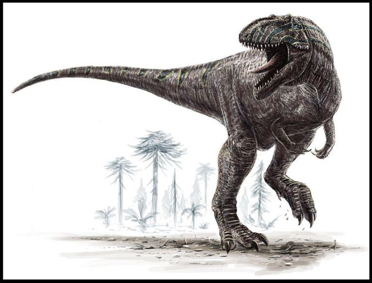
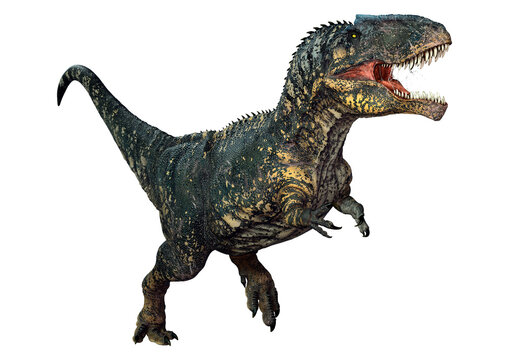
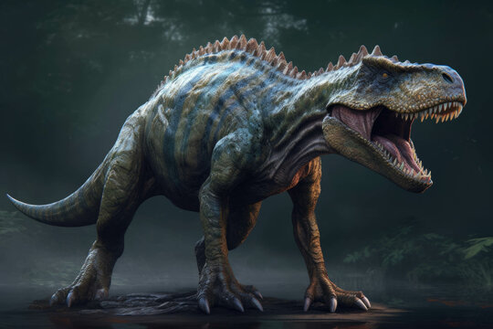

O Giganotosaurus é um dos maiores dinossauros carnívoros conhecidos, vivendo durante o final do período Cretáceo,
há cerca de 98 milhões de anos. Seu nome, que significa "Lagarto Gigante do Sul", reflete o tamanho impressionante
e a importância desse predador no ecossistema de sua época.
Características Principais
Tamanho e Estrutura: O Giganotosaurus era um dos maiores terópodes, com estimativas indicando
que podia alcançar comprimentos de até 13 a 15 metros e pesar entre 8 a 10 toneladas..
Seu corpo era massivo, com um crânio grande e robusto, projetado para caçar grandes presas.
Crânio e Dentes: O crânio do Giganotosaurus era grande e equipado com dentes afiados e serrilhados,
adaptados para cortar e esmagar carne. Esses dentes eram longos, com uma forma que ajudava a agarrar e rasgar
suas presas, tornando-o um predador eficaz.
Membros e Locomoção:O Giganotosaurus possuía pernas poderosas e um corpo adaptado para uma
locomoção rápida e ágil, apesar de seu tamanho colossal. Seus membros anteriores eram relativamente pequenos,
mas ainda assim desempenhavam um papel importante na captura e imobilização de presas.

Comportamento e Dieta
Predador de Topo: O Giganotosaurus era um predador de topo em seu ecossistema, alimentando-se de
grandes dinossauros herbívoros que compartilhavam seu habitat. Sua grande força e tamanho permitiam-lhe caçar
presas de grande porte, o que o tornava um dos principais predadores de seu tempo.
Dieta: A dieta do Giganotosaurus consistia principalmente de outros dinossauros,
incluindo grandes herbívoros. Seus dentes e mandíbulas poderosas eram adaptadas para triturar carne e ossos,
permitindo-lhe explorar uma variedade de alimentos.

Paleontologia e Descobertas
Descoberta e Fósseis: O primeiro fóssil de Giganotosaurus foi descoberto na Argentina em 1993.
Os fósseis encontrados incluem partes do crânio e esqueletos parciais que ajudaram os paleontólogos a reconstruir
a aparência e o comportamento desse impressionante dinossauro.
Importância na Paleontologia: O Giganotosaurus é significativo para a paleontologia porque
representa um dos maiores dinossauros carnívoros conhecidos, comparável ao famoso Tyrannosaurus rex em tamanho.
Sua descoberta ajudou a expandir o entendimento sobre a diversidade e o tamanho dos predadores que habitavam
a Terra durante o Cretáceo.
Curiosidades
Nome: O nome "Giganotosaurus" significa "Lagarto Gigante do Sul", em referência ao seu
tamanho e à sua localização geográfica, pois foi encontrado na região sul da América do Sul.
Comparação com Outros Predadores: Embora o Giganotosaurus e o Tyrannosaurus rex sejam
frequentemente comparados, o Giganotosaurus é conhecido por ser ligeiramente maior em comprimento,
embora o T. rex fosse mais robusto.

Resumo de informações sobre o Giganotosaurus
Classificação
Reino: Animalia
Filo: Chordata
Classe: Reptilia
Ordem: Saurischia
Família: Carcharodontosauridae
Gênero: Giganotosaurus
Espécie: G. carolinii
Características Físicas
Comprimento: Aproximadamente 12 a 13 metros
Altura: Cerca de 4 metros até os quadris
Peso: Entre 8 e 14 toneladas
Cabeça: Grande, com mandíbulas poderosas e dentes serrilhados
Braços: Relativamente curtos, mas mais longos que os do T. rex
Cauda: Longa e musculosa, usada para equilíbrio
Hábitat e Período
Período: Cretáceo Superior (cerca de 98 a 97 milhões de anos atrás)
Localização: América do Sul, principalmente na região da Patagônia (Argentina)
Ambiente: Florestas e áreas planas, próximas a rios e lagos
Dieta
Carnívoro
Alimentação: Grandes herbívoros, como o Argentinosaurus
Habilidade de caça: Provavelmente caçava grandes presas em emboscadas, utilizando sua velocidade e força
Curiosidades
Significado do nome: "Lagarto gigante do sul"
Primeiro fóssil encontrado: 1993
Um dos maiores dinossauros carnívoros conhecidos, rivalizando com o T. rex e o Spinosaurus em tamanho